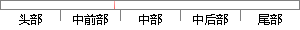

需求分析是本系统设计与开发的一大关键点，因此也需要严格进行。
片段位置图

相似结果|
相似片段 1：的基础。由于本系统的设计是严格按照系统安全开发方法来进行设计和开发的，因此对系统安全开发方法需要进行认真仔细的分析使用。本文研究了系统安全开发方法的一般过程和一般方法，对系统安全开发方法所采用的方法论
|
※ 片段修改建议 ※
近似词参考：- 分析：阐发 阐明 剖析
- 设计：计划
- 开发：开辟
- 关键：关头 环节 枢纽 要害 症结
- 因此：是以 因而
- 需要：必要
- 严格：严酷 严厉
- 进行：举行
系统自动生成语句： 需求阐发是本系统计划与开辟的一大关头点，是以也必要严酷举行。
注：本片段修改建议为系统自动生成，仅供参考。